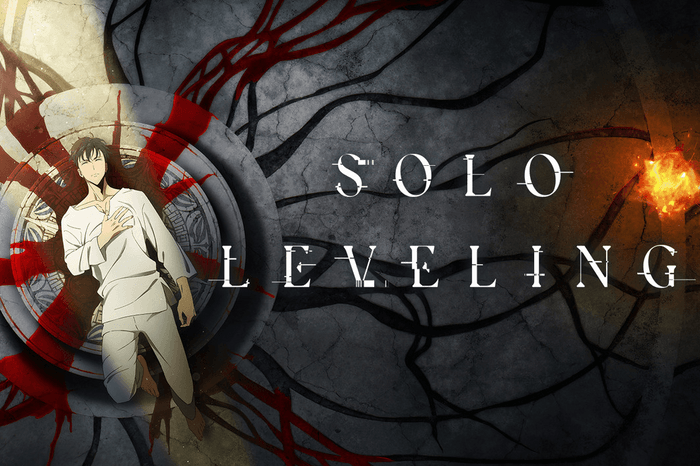

Solo Leveling | Complete Review
By Ashley Morgrain

Rating - ⭐⭐⭐⭐⭐
"In a world where hunters, humans who possess magical abilities, must battle deadly monsters to protect the human race from certain annihilation, a notoriously weak hunter named Sung Jinwoo finds himself in a seemingly endless struggle for survival. One day, after narrowly surviving an overwhelmingly powerful double dungeon that nearly wipes out his entire party, a mysterious program called the System chooses him as its sole player and in turn, gives him the extremely rare ability to level up in strength, possibly beyond any known limits. Jinwoo then sets out on a journey as he fights against all kinds of enemies, both man and monster, to discover the secrets of the dungeons and the true source of his powers."
Solo Leveling is a webtoon adapted from the web novel by Chugong, with art by DUBU (REDICE STUDIO) and story by h-goon. If you have been following along with my posts, you would have seen that I have been doing arc-by-arc reviews of this series. While that does help break down my thoughts on the individual arcs, I wanted to do a complete review of the series as a whole.
I have heard about this series for a while now but wasn't particularly interested in reading it initially. For one, I have never read a leveling manhwa, so I didn't know whether I would like it or not. Secondly, it wasn't finished yet, and I would like to think I know better than to get invested in a series that isn't finished (but clearly I don't know better).
But, with the series being wrapped up last December, I thought that this was my chance to finally pick it up, and I don't regret it at all. While it took me far longer than I expected to get through, I finally get what all the hype is about. There were a lot of flaws that stood out to me, which I will go over in my review, so this wasn't a complete winner for me.
While this series may just seem like a whole lot of fighting, in the end, it is a lot more than just that, and this is a series for all kinds of readers. Are you a character-based reader? Well, this has all the Jinwoo you could want. Are you a plot-based reader? Well, this is broken up into story arcs so we definitely have that. How about some good world-building? Well, you can check that off too.
WRITING/ART
One thing you can't complain about is the character design because we've got a whole bunch of pretty characters in this. I did notice one thing about the designs though, specifically Jinwoo and Jinha. Jinwoo's eyes kept changing between grey and black, and Jinha's hair between dark brown and purple. I don't know what the intention behind this was, but it was just something odd that jumped out to me.
As for the fight scenes, they were a bit hard to follow. Unlike manga, webtoons have long vertical panels, which results in some rather awkward scenes to have to read since you don't get the full image in one shot, you have to scroll down to see it. On top of that, the panels were full of just a lot of motion blur, flashes and text.
When it comes to the text itself, I have no complaints there really (aside from one spelling mistake I noticed). Manga and manhwa do a good job at fitting in the right amount of text and context into a bubble. I also like how it wasn't always the standard white and black boxes, as the colours would change to reflect the atmosphere.
PLOT
This is the kind of story where whether you like it or not may depend on your reading preferences. If you are someone who doesn't like a lot of action or doesn't like OP characters, the chances of you liking it are slimmer. That doesn't mean though that the odds are completely down, as plenty of readers who gave this a shot with the same dislikes did end up enjoying it.
I already mentioned fight scenes in the previous section in terms of visuals, but I wanted to touch on them again in this section. For a series with a lot of fighting, there was also just not a lot of fighting, if you get what I mean. Fights tended to be on the shorter side for the most part, including fights that I had been anticipating for a while, which was disappointing. There is still no shortage of fight scenes though, so if you are looking for a series packed with an MC who kicks ass and wins every time, then we have a winner here.
Another thing the series is good for is that it almost feels like you grow with it. Because it takes a while to get through it, at least for me because I paced myself, by the time you get to the end it felt like a century ago since Jinwoo first woke up changed. With that, you can really see just how far he has come, and how much he has changed both physically and mentally.
Speaking of progression, though, the story did a very good job at showing Jinwoo's progression as a hunter in general. The story starts out by putting him in situations he has no hope of winning, but then it will circle back to it later on when he is strong enough to now deal with it. It was also a really good way to also fully flesh out all of the subplots.
That is more or less the general gist of the story: we follow Jinwoo as he grows stronger while also facing increasingly stronger foes. There is, of course, a bigger underlying story happening that is slowly revealed as you go on, but I can't really go into detail about that because of spoilers. I wouldn't say that I was particularly invested in the deeper story too much, but it didn't really matter to me since I was enjoying myself anyway.